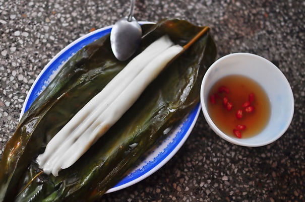
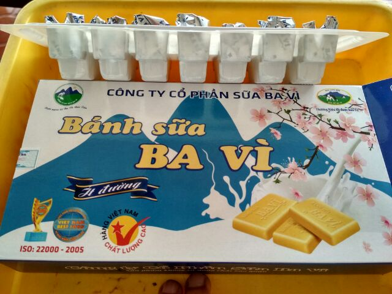
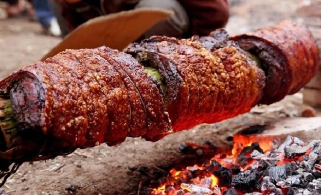
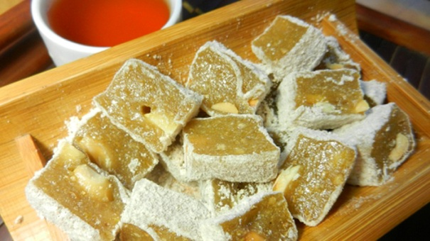
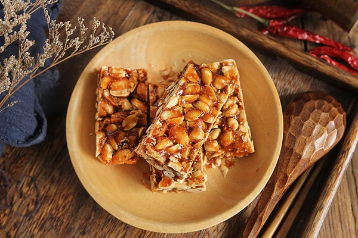

Bạn đã biết Sơn Tây có những đặc sản gì chưa?
Nếu đã có dịp ghé thăm manh đất Sơn Tây yên bình, chắc chắn bạn sẽ không thể quên những món ăn hết sức bình dị, dân dã nơi đây, vốn đã ghi dấu trong lòng thực khách gần xa. Vậy Sơn Tây có những đặc sản gì? Hãy cùng Red Gravy khám phá ẩm thực vùng đất hai vua này nhé.
Cách trung tâm Hà Nội khoảng 50 km, khu vực Sơn Tây là địa điểm lý tưởng cho những ai muốn tìm về sự bình yên sau những ngày làm việc mệt mỏi. Nổi tiếng với những địa danh du lịch, lịch sử, các đền, chùa, làng cổ,… được thiên nhiên ưu đãi về khí hậu, thổ nhưỡng nên vùng đất này đã cho ra đời rất nhiều món ăn đặc sản hấp dẫn.
Bánh tẻ Phú Nhi
Chiếc bánh tẻ thơm mùi mộc nhĩ, thịt, hành khô
Món bánh tẻ dân dã này nổi tiếng ở làng Phú Nhi, được làm từ những nguyên liệu đơn giản như gạo tẻ, mộc nhĩ, thịt, hành khô. Lá gói bánh tẻ được bọc 2 lớp, lớp trong là lá dong và bao bên ngoài bởi lá chuối. Điều này giúp bánh ngon hơn và thơm mùi lá.
Bánh ngon nhất là khi vừa được vớt ra khỏi nồi, khói còn nghi ngút. Bánh chín có màu xanh lá nhẹ nhàng, hơi phớt màu bóng mỡ và trắng ngần của gạo tẻ. Người ta pha mắm có chút tiêu ớt làm nước chấm, phần bánh có nhân được quyện đều vào vỏ, làm bánh trở nên đậm đà.
Bánh sữa Ba Vì
Là một cao nguyên nhỏ trong lòng thị trấn Sơn Tây, ở Ba Vì có những đồng cỏ xanh mướt, nơi những đàn bò sữa cho ra đời những sản phẩm sữa thơm ngon, và bánh sữa là một phần không thể thiếu mà những người phương xa mua về làm quà.
Bánh sữa có nhiều loại, tùy vào sở thích của từng người mà bạn có thể lựa chọn bánh sữa trắng, bánh sữa nhạt, bánh sữa chocolate hay bánh sữa nhạt chocolate. Vị béo mềm, thơm ngon của bơ, sữa nguyên chất mang đến cảm giác thanh thanh vô cùng vừa miệng, càng đặc biệt hơn khi bạn thưởng thức cùng với tách trà nóng.
Thịt quay đòn
Nổi tiếng bởi cách chế biến kì công và độc đáo, thịt quay đòn trở thành đặc sản thơm ngon mà nếu có dịp về Sơn Tây bạn nên nếm thử. Một miếng thịt 1 kg được tẩm ướp và quay trong vòng 6 tiếng, vị ngon của thịt xứng đáng với chừng ấy thời gian bỏ ra chế biến. Phần thịt ngọt mềm được bọc một lớp bì giòn tan, thơm lừng hương ổi, ngậy béo mà ăn bao nhiêu cũng không thấy ngán.
Chè lam
Chè lam mà thưởng thức cùng tách trà nóng thì thật tuyệt vời. Một trong những món ăn nổi tiếng của xứ Đoài chính là chè lam. Những nguyên liệu đơn giản như bột gạo nếp rang, mạch nha, gừng tươi, đường mật, lạc rang,… được hòa quyện lẫn nhau tạo nên một thứ quà đầy tinh tế mà vẫn mang đậm vẻ thân thuộc của làng quê Việt Nam. Chè đã nguội hẳn được cắt thành những miếng hình chữ nhật bằng khoảng 2 ngón tay rồi lăn đều qua lớp bột áo. Lớp bột này giúp những miếng chè không dính lại với nhau. Chè lam vừa ăn sẽ không mềm quá cũng không được cứng quá. Để có món chè lam chuẩn vị nhất, ở Sơn Tây người ta có thể tìm mua ở khu vực làng cổ Đường Lâm hoặc quanh chùa Mía, lăng vua Ngô Quyền hoặc đền Bố Cái Đại Vương Phùng Hưng.
Kẹo lạc Đường Lâm
Món kẹo lạc ở Đường Lâm trở thành minh chứng lịch sử và gắn bó với tuổi thơ của biết bao con người sinh ra và lớn lên ở đây. Ở một vài gia đình, nghề làm kẹo lạc được truyền qua nhiều đời con cháu. Được làm từ đường, mạch nha, lạc, đây là món quà cực kỳ dân dã và cổ truyền. Loại kẹo này có độ ngọt không quá cao, cảm giác khi đưa thanh kẹo lên miệng cắn một miếng sẽ nhận được vị giòn tan, thơm bùi của lạc, vị ngọt của mạch nha và đường thoang thoảng. Bạn cũng có thể thưởng thức món kẹo lạc cùng với tách trà nóng, vị thanh khiết của trà sẽ trung hòa vị ngọt của kẹo. Sơn Tây có những đặc sản mộc mạc, dung dị như chính một phần cuộc sống của người dân nơi đây. Để rồi ai đã từng ghé qua nơi này cũng sẽ nhớ mãi cái hương vị ấy, hương vị ẩm thực bình dị, thân quen.